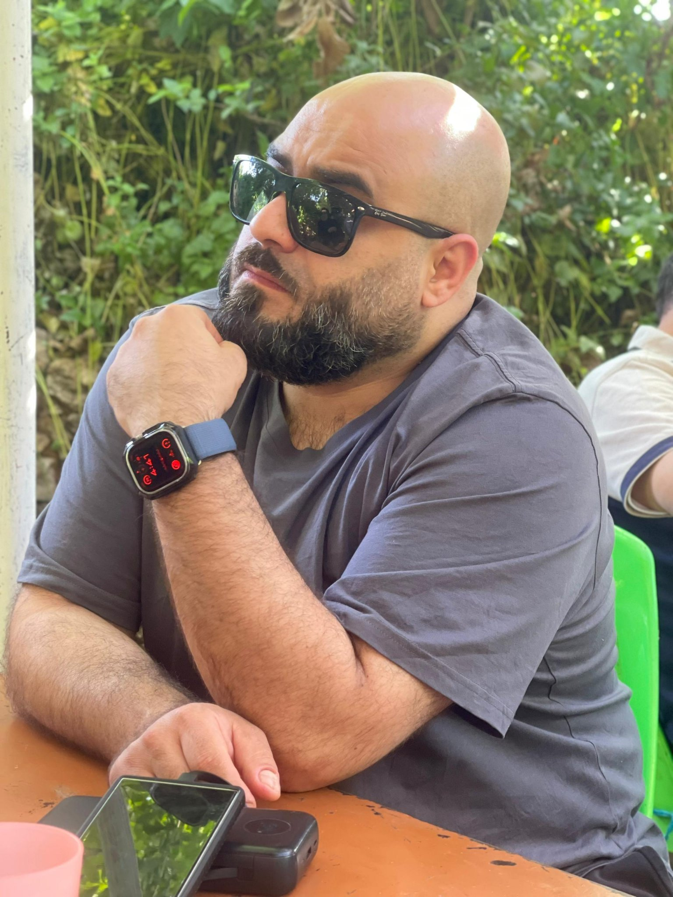
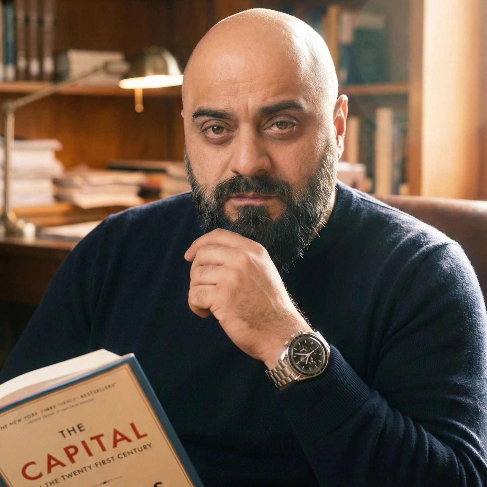

Houssam Harwash
About
Houssam Harwash, PMP® | CM®, is a project management and marketing professional based in Mississauga, Ontario, with a career that spans three countries and two industries.
He began in Syria, earning a Bachelor's Degree in Economics from Damascus University. In Canada he rebuilt on credentials: an Advanced Diploma in Business Administration from Sheridan College with High Honours, the PMP® certification, the Chartered Marketer designation, and an Ontario real estate licence. In 2019 he co-founded Harwash Inc in Toronto with his brother Osama, where he leads operations, marketing, and business development.
Today his professional focus is project management, operations, and marketing, with a standing commitment to humanitarian and community work.

The road here
Credentials
- PMP® — Project Management Professional, PMI
- CM® — Chartered Marketer, Canadian Marketing Association
- Advanced Diploma in Business Administration, Sheridan College — High Honour Graduate, 3.93 GPA
- Bachelor's Degree in Economics, Damascus University
- Real Estate Licence, Humber College — licensed Ontario realtor
- Letter of Appreciation, Saudi Aramco, South Ghawar Maintenance Services Division


Research & marketing work
His Sheridan portfolio includes an original TikTok usage study with survey research and Looker Studio dashboards, brand and campaign case analyses (Syncapse, Shaw Media, Anheuser-Busch, Uber vs Taxi), a full marketing plan, a B2B digital marketing campaign, and agency pitch work.